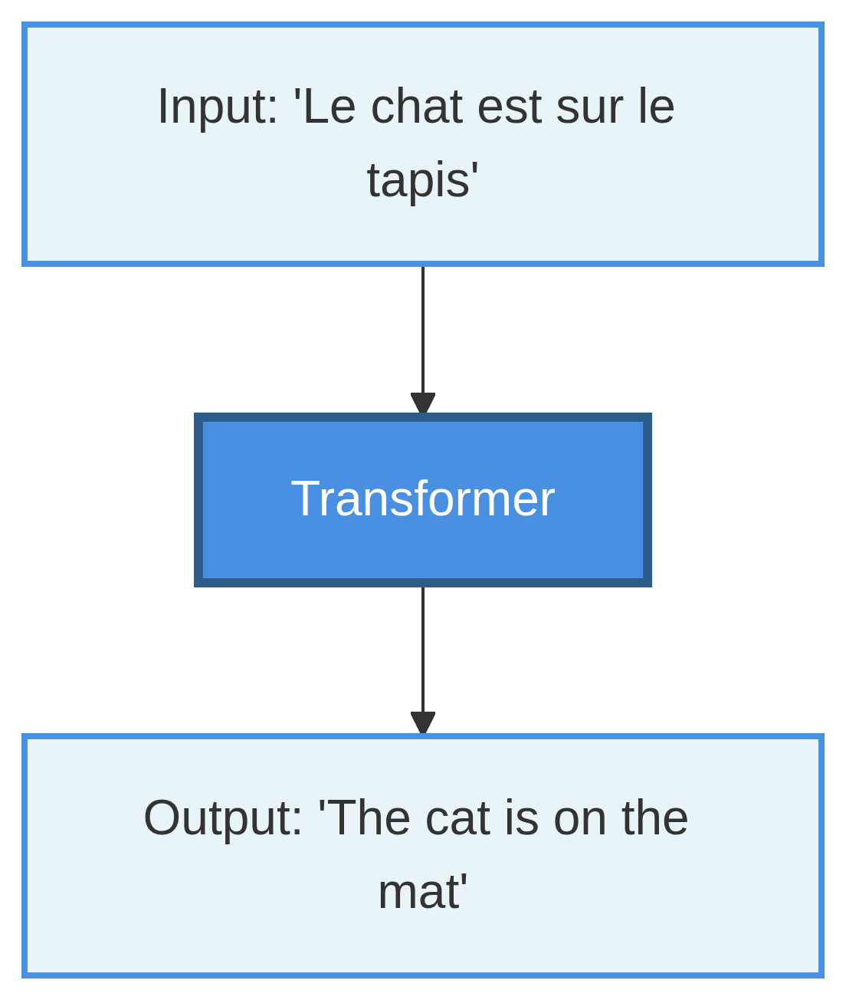
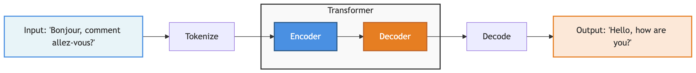
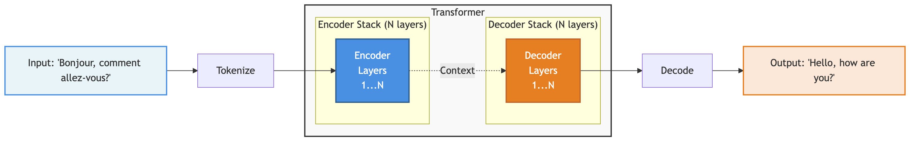
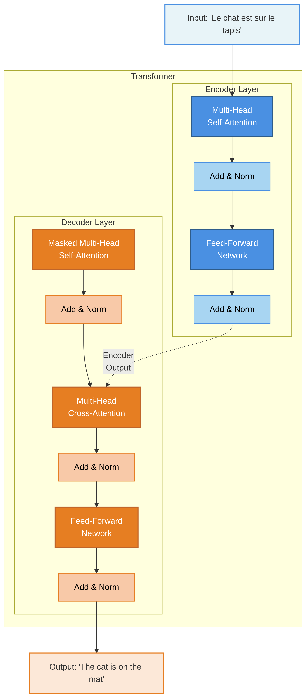

array([ 0.13040183, -0.01187013, -0.02811704, 0.05123864, -0.05597447,
0.03019154, 0.0301613 , 0.02469837, -0.01837057, 0.05876679],
dtype=float32)Week 1: Foundations of Generative AI
Lesson Objectives
- Explore the history of vector embeddings and tokenization
- Understand the transformer architecture and how it works at a high level
- Use a simple sentence transformer to create vector embeddings and test for similarity
- Cover a brief history of early generative transformers
- Setup and use Colab Pro, and start becoming familiar with the basics of notebooks and Python (if you haven’t used them already)
Let’s Rewind To 2013…
Back in 2013
- NLP (Natural Language Processing) was hot!
- Sentiment analysis, named entity recognition, parsing, etc.
- But, you had limited options…
- One-hot encoding
- Hand crafted features
- Neural language models
Word2Vec Released
- First example of vector embeddings
- TBD Citation here
What are Vector Embeddings?
- Vector Embeddings are meaningful numerical representations of words
- Representations where words (or sentences) are encoded into multi-dimensional space
- Large number of dimensions (we’ll use 384 in our examples)
- Similar words/sentences have similar numbers
How does Word2Vec Work?
- TBD
Challenges with Word-Based Embeddings
- Large volabularies
- 100K+ words
- And not particularly friendly to non-English vocabularies
- Little representation between words
- “Run” and “Running” should be related
- Lack of context
- Embedding for the word “bank” is the same, regardless of context
- “River bank” != “Savings bank”
Challenges with Word-Based Embeddings
- Some researchers tried character-level models
- Small vocabulary (26 letters + puntuation for English)
- But very long sequences
- And hard to extra meaning
2015: Subword Tokenization
- Breaks words into frequent subword units
- “unbelievable” → [“un”, “believ”, “able”]
- Balance between word level (large vocab) and character level (long sequences)
- Supports related words ([“Run”] and [“Run”, “ning”])
- Supports unknown words
- 30-50K tokens vs. 100K
- Also works well for non-English languages
2016: Byte Pair Encoding (BPE)
- TBD: Sennrich et. al (need citation)
Search for Context
- BPE provided efficiency and representation between words
- But still didn’t solve context
- e.g., “River bank” != “Savings bank”
- Researchers working on “attention tasks” using Recurrent Neural Networks (RNNs)
- Mostly for translation purposes
- Showed that focusing on relevant parts of input improved translation quality
- TBD: Bahdanau et al. introduce attention for translation (citation needed)
2017: “Attention is all you need”
- Google researchers publish “Attention is all you need” (Vaswani et al. 2017)
- Introduced the Transformer a novel Neural Network (NN) architecture, eliminating the need for RNNs for sequence-to-sequence models
- Used BPE tokenization, and creates contextual embeddings during training process
- Attention mechanism allows the model to weigh the importance of words in a sequence
- Achieved State Of The Art (SOTA) performance on language translation, while also being faster to train
Introducing the Transformer
Introducing the Transformer
Introducing the Transformer
Introducing the Transformer
Example
Example
Example
Are They Similar?
- We can test with cosine similarity
- Measures the angle between two vectors:
- Same direction = very similar (similarity close to 1)
- Opposite direction = very different (similarity of -1)
- Cosine similarity focuses on the angle of the vector vs. length
- Useful for comparing texts of different sizes
Are They Similar?
[[ 1.0000002 0.47530937 0.00155361]
[ 0.47530937 1. -0.04451237]
[ 0.00155361 -0.04451237 1. ]]Lead into GPT
- TBD
Then show the history
- TBD
Let’s Run Some Code!
What is a Notebook?
What is a Notebook?
- An interactive document that combines:
- Live code that can be executed
- Rich text explanations (markdown)
- Visualizations and outputs
- Think of it as a computational narrative
- Tell a story with code, data, and explanations
- Originally designed for data science and research
- Also used for learning, experimenting, and sharing results
A Brief History of Notebooks
- 2011: IPython Notebook project begins
- Interactive Python shell → web-based notebook
- 2014: Renamed to Jupyter (Julia, Python, R)
- Now supports 40+ programming languages
- 2017: Google launches Colab
- Free cloud-based Jupyter notebooks
- Free access to GPUs and TPUs
- Today: Industry standard for ML/AI development
Anatomy of a Notebook
- Format: Extension is .ipynb
- JSON format, using Jupyter Document Schema
- Cells: Building blocks of notebooks
- Code cells: Executable Python code
- Markdown cells: Text, headings, images, equations
- Kernel: The computational engine running your code
- Maintains state between cell executions
- Outputs: Results appear directly below code cells
- Text, tables, plots, interactive widgets
How to Run Notebooks
- Jupyter Notebook Server (Classic approach)
- Web interface on localhost
- VS Code (Local development)
- Jupyter extension for VS Code
- Run on your own machine
- Google Colab (Recommended)
- Browser-based, no installation needed
- Free GPU access
Advantages of Google Colab
- Access to GPUs and TPUs for AI-based tasks
- e.g., A100 and H100 with 40Gb/80Gb VRAM
- Model downloaded between cloud vendors
- vs. downloading large models via the DigiPen network
- Many libraries pre-installed
- Easy to share notebooks with others
- Generous (free) GPU limits for students!
Demo
Hello World notebook in Colab, VS Code, and Local Jupyter server
References
Vaswani, Ashish, Noam Shazeer, Niki Parmar, Jakob Uszkoreit, Llion Jones, Aidan N Gomez, Łukasz Kaiser, and Illia Polosukhin. 2017. “Attention Is All You Need.” In Advances in Neural Information Processing Systems. Vol. 30.